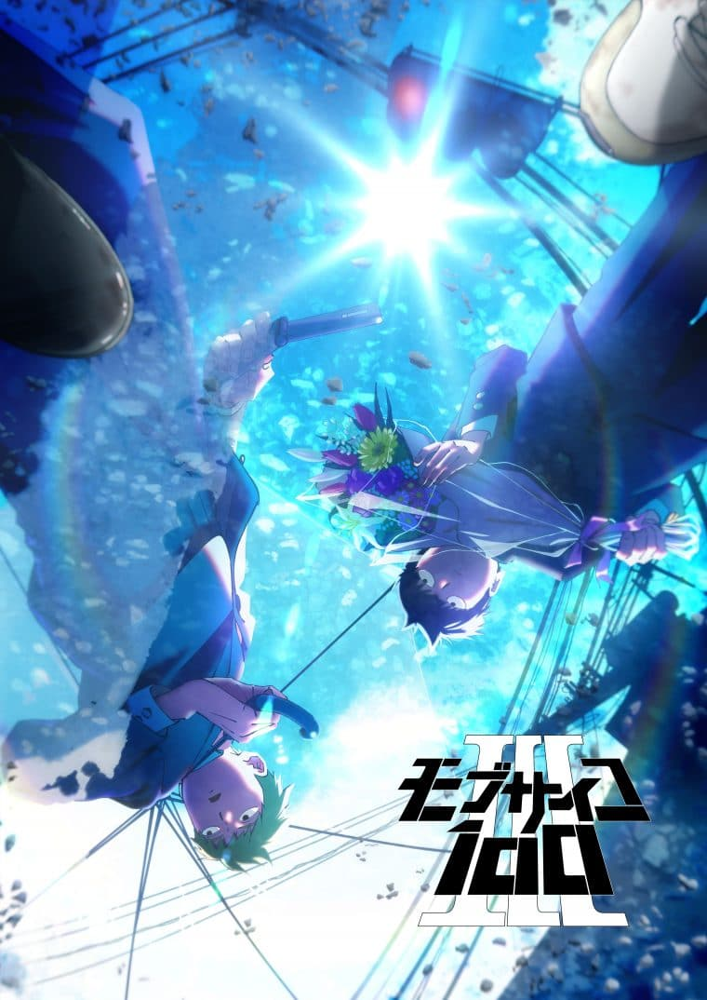
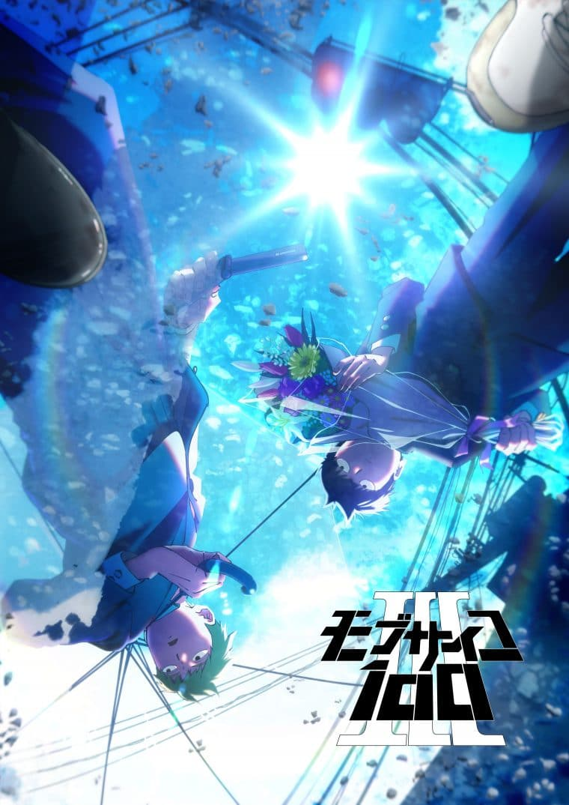

Sobre Mob Psycho 100
Mob Psycho 100 é um anime e mangá criado por ONE que acompanha Shigeo Kageyama, um garoto com imensos poderes psíquicos que busca viver como uma pessoa comum, reprimindo suas emoções para não perder o controle. Trabalhando com Reigen, um falso médium que se torna seu mentor, Mob enfrenta ameaças sobrenaturais, outros espers e desafios emocionais enquanto aprende sobre si mesmo, amadurece e entende o valor das conexões humanas. A obra combina ação intensa, humor peculiar e temas profundos sobre identidade, crescimento pessoal e equilíbrio emocional.
A Busca por Aceitação
Mob trabalha muito o conceito sobre a busca da auto-aceitação, aprendendo e entendendo como viver consigo mesmo todos os dias.
Controle Emocional
Lidar com as emoções é um desafio constante, e Mob aprende que sentir intensamente não é errado — o importante é como se age diante disso.
Conexões Humanas
As conexões humanas são fundamentais para seu crescimento, mostrando que amizades verdadeiras ajudam mais do que qualquer poder.
Autodesenvolvimento Pessoal
O esforço pessoal tem grande valor na história, com Mob se dedicando a melhorar por si mesmo, mesmo sem talentos físicos.

 
